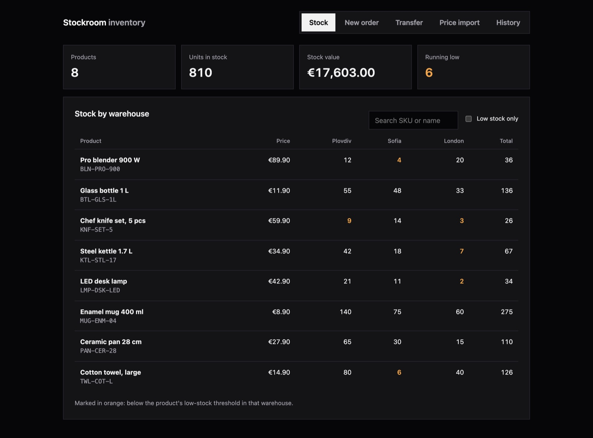
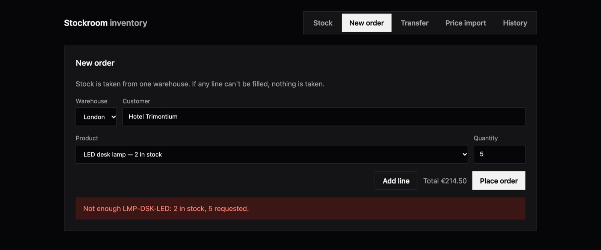
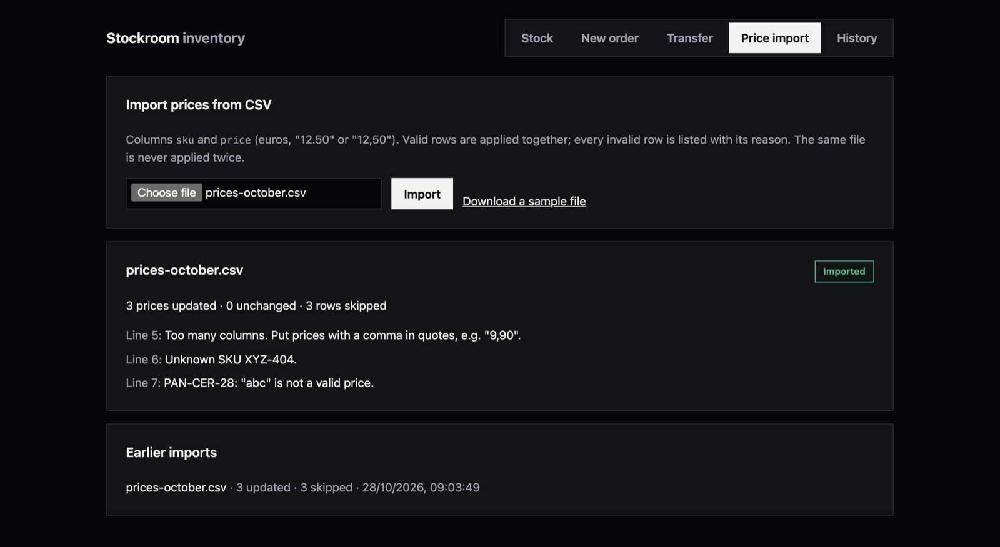

Stockroom
PHP / LARAVEL / VUE — INVENTORY
An inventory system for a company that sells products from several warehouses. Staff see stock in Plovdiv, Sofia and London, place orders, move stock between warehouses and update prices from a CSV file — and the numbers stay right when people act at the same time.
TRY THE LIVE DEMO ↗ EXPLORE THE SOURCE ↗ SEE THE CI RUNS ↗One ledger. Every change goes through it.
IMPLEMENTED FLOW- 01 / VALIDATEForm requests
Warehouses, products and quantities are checked before anything touches stock.
- 02 / LOCKSELECT … FOR UPDATE
The affected stock rows are locked inside a transaction, always in the same order.
- 03 / MOVEStockLedger
The only code that changes a quantity. A shortage anywhere rolls the whole change back.
- 04 / RECORDAppend-only history
Every order, transfer and price change is written as a movement with its source.
Checked with ten simultaneous orders for the last three units in London: three succeeded, seven were refused, and stock ended at exactly zero.

01 — THE PROBLEM
Stock numbers are only useful if they are true.
A company that distributes thousands of products from several warehouses depends on one number per product and place. That number goes wrong in ordinary ways: two people sell the last unit at the same moment, a request is retried after a timeout, a transfer fails halfway, a price list is uploaded twice or written with a comma as the decimal separator.
Stockroom is a small version of that system, built to show how each of those cases is handled.
02 — WHEN THINGS GO WRONG
Every failure has a defined outcome.
- Same last unitStock rows are locked inside the transaction. The second order waits, sees zero and is refused with the reason.
- Negative stockA PostgreSQL CHECK constraint rejects it even if application code had a bug.
- Partial orderIf line three can't be filled, lines one and two are not taken either.
- Retried requestOrders and transfers carry an Idempotency-Key; the same key returns the original result.
- Opposite transfersRows are always locked in id order, so two transfers in opposite directions can't deadlock.
- Same file twicePrice files are identified by a SHA-256 of their contents and applied once.

03 — PRICE IMPORT
Report every row, apply the good ones.
Prices come from a CSV with sku and price columns. Valid rows are applied together in one transaction; each invalid row is listed with its line number and reason — an unknown SKU, a price that isn’t a number, the same SKU twice.
Writing tests for the parser exposed a real trap: an unquoted 9,90 splits into two columns and would have been read as €9.00 without any warning. That row is now refused with a clear message. Prices are parsed to integer cents, never floats, so 19.99 stays 1999.

04 — LARAVEL DESIGN
Thin controllers, one service per action.
Controllers validate the request and return JSON. PlaceOrder, TransferStock and ImportPrices each own one action and its transaction; all of them change quantities only through StockLedger, which locks rows and writes the history. The product list loads stock with eager loading, so it is two queries whatever the number of products.
The interface is a Vue 3 single page built with Vite: a stock table with search and low-stock filtering, order and transfer forms that keep one idempotency key per attempt, the price import with its report, and the history.
05 — VERIFIED BEHAVIOR
Test the edges, not only the happy path.
- A shortage on one line leaves every quantity untouched and creates no order.
- Two lines for the same product are checked together.
- The same Idempotency-Key places an order once; without a key the request is refused.
- The database refuses negative stock even when the application is bypassed.
- A transfer moves units out and in together, or not at all.
- The same price file — even with Windows line endings — is applied once.
30 PHPUnit tests run against PostgreSQL. GitHub Actions runs them with Laravel Pint and a frontend build on every push.
READ THE TESTS ↗06 — DEPLOYMENT
nginx in front, PHP-FPM behind.
A multi-stage Dockerfile builds the Vue assets with Node, then installs production dependencies into a PHP-FPM image with the PostgreSQL driver. The image runs nginx and PHP-FPM together and listens on the port the host assigns, so the same image runs locally with Docker Compose and on Render, with PostgreSQL on Neon. On start it migrates, seeds an empty database and resets the public demo data once it is more than 24 hours old.
APP_KEY=$(php artisan key:generate --show) docker compose up --build
# http://localhost:808007 — BOUNDARIES
Say what it does not do.
There is no login: it is a demonstration of the inventory logic, not a finished product. In real use the API would sit behind authentication with per-role permissions, and large imports would run as queued jobs. The live demo runs on a free server that sleeps when unused, so the first visit can take up to a minute; anyone can change its data, which is why it resets every 24 hours.
The project was built with AI-assisted tooling; the design decisions and the failure cases are documented in the repository.
OPEN THE LIVE DEMO ↗ VIEW REPOSITORY ↗